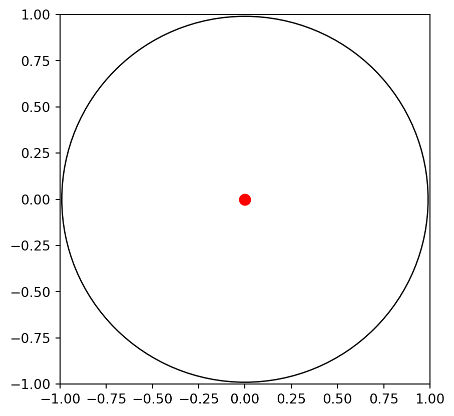
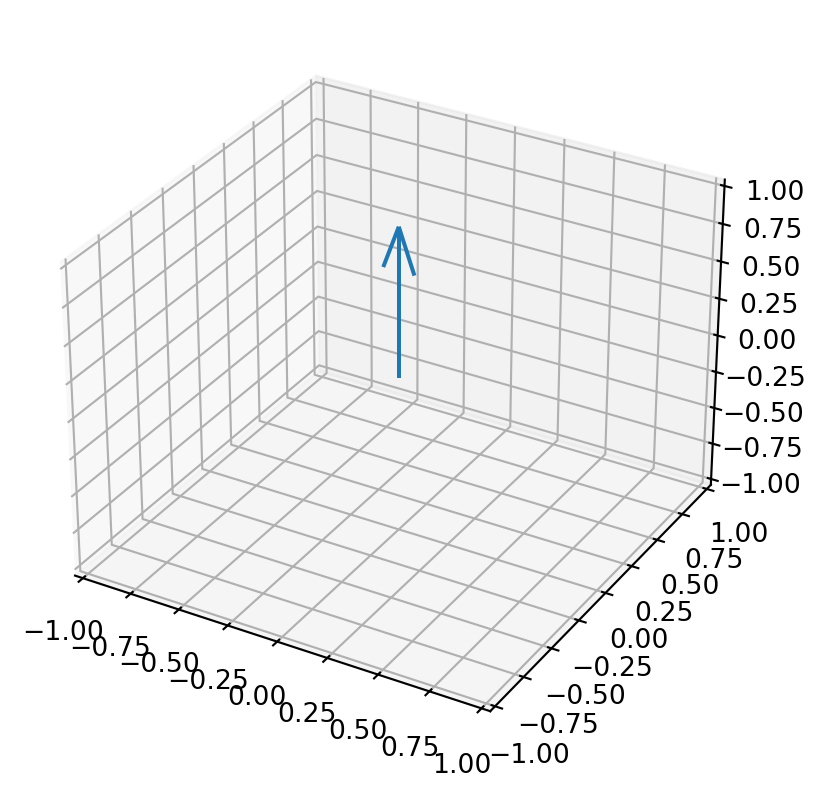

import ipywidgets as widgets
import matplotlib.pyplot as plt
from mpl_toolkits.mplot3d import Axes3D
import numpy as np
initial_dot_position = (0, 0)
# Function to update 3D plot based on dot's position
def update_3d_plot(vx, vy):
norm = np.sqrt(1 - vx**2 - vy**2)
ux, uy, ut = vx / norm, vy / norm, 1 / norm
# Clear the previous vector and plot a new one
ax_3d.clear()
ax_3d.quiver(0, 0, 0, ux, uy, ut, length=1, normalize=True)
ax_3d.set_xlim(-1, 1)
ax_3d.set_ylim(-1, 1)
ax_3d.set_zlim(-1, 1)
fig_3d.canvas.draw_idle()
# Create 2D plot with draggable dot
fig_2d, ax_2d = plt.subplots()
circle = plt.Circle((0, 0), 0.99, fill=False)
ax_2d.add_artist(circle)
dot, = ax_2d.plot(*initial_dot_position, 'ro', markersize=8)
ax_2d.set_xlim(-1, 1)
ax_2d.set_ylim(-1, 1)
ax_2d.set_aspect('equal', adjustable='box')
# Create 3D plot
fig_3d = plt.figure()
ax_3d = fig_3d.add_subplot(111, projection='3d')
vec = ax_3d.quiver(0, 0, 0, 0, 0, 1, length=1, normalize=True)
ax_3d.set_xlim(-1, 1)
ax_3d.set_ylim(-1, 1)
ax_3d.set_zlim(-1, 1)
# Function to handle dot dragging
def on_dot_drag(change):
x, y = change['new']
if np.sqrt(x**2 + y**2) <= 0.99:
dot.set_data([x], [y])
fig_2d.canvas.draw_idle()
update_3d_plot(x, y)
# Widgets to control the dot position
vx_slider = widgets.FloatSlider(description='vx', min=-0.99, max=0.99, value=0)
vy_slider = widgets.FloatSlider(description='vy', min=-0.99, max=0.99, value=0)
def interactive_plot(vx, vy):
on_dot_drag({'new': (vx, vy)})
widgets.interactive(interactive_plot, vx=vx_slider, vy=vy_slider)
